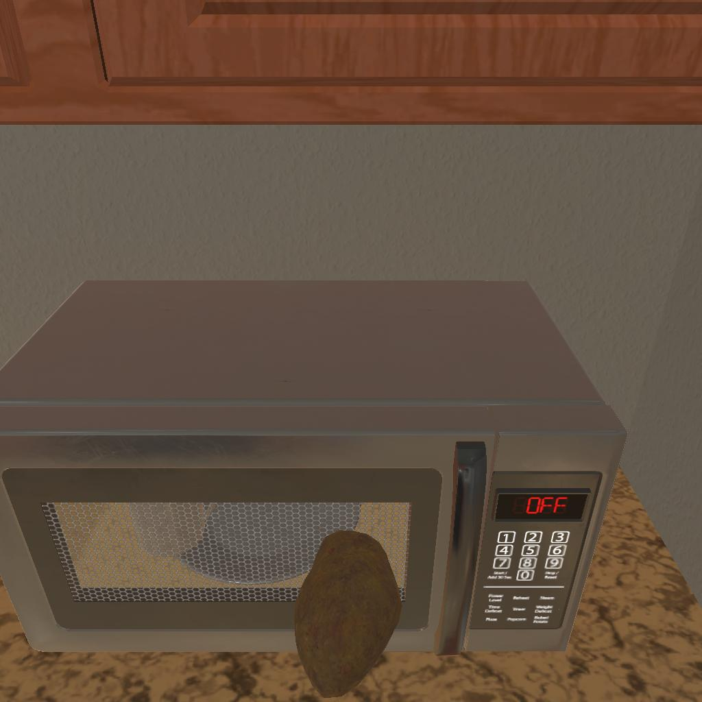

---------------------------------------------------------task: 19---------------------------------------------------------
--------------------------------------------------------------------------------------------------------------------------------------------------------------------
--------------------------------------------------------------------------------------------------------------------------------------------------------------------
Step:--------------------------------------------------------------------------10-------------------------------------------------------------------------------
----------------------------------------
VLM Prompt:
**Task**
Please perform as an embodied AI agent. Our final objective is to put a cool tomato in microwave. Below is the plan for completing the task, the current observation, alongside historical data and admissible actions for the next step. Please determine the best action for the next step!
**Plan**
Below is a detailed step-by-step plan to complete the task.
1. Find a tomato.
2. Pick up the tomato.
3. Find a fridge.
4. Cool the tomato with the fridge.
5. Find a microwave.
6. Open the microwave door.
7. Place the cooled tomato in the microwave.
8. Close the microwave door.
**Current Observation**
Displayed is an image capturing the current position of the agent.
**History Information**
Displayed are the previous observations with their corresponding actions.
Current State 1:
1. Place: Unknown
2. Step Index in Plan: 1
3. Objects: Tomato
4. Action: go to fridge 1
Current State 2:
1. Place: In front of fridge 1
2. Step Index in Plan: 4
3. Objects: Fridge 1
4. Action: Open fridge 1
Current State 3:
1. Place: Inside the fridge
2. Step Index in Plan: 4
3. Objects: Tomato
4. Action: Go to microwave 1
Current State 4:
1. Place: In front of a microwave
2. Step Index in Plan: 5
3. Objects: Tomato, Microwave
4. Action: Open microwave 1
Current State 5:
1. Place: Kitchen
2. Step Index in Plan: 6
3. Objects: Potato, Mug, Tomato
4. Action: Take potato 1 from microwave 1
Current State 6:
1. Place: In front of a microwave
2. Step Index in Plan: Step 7
3. Objects: Potato, Mug, Tomato
4. Action: Put potato 1 in/on microwave 1
Current State 7:
1. Place: In front of an open microwave
2. Step Index in Plan: 7
3. Objects: Microwave, mug, plate, potato, tomato (presumed inside)
4. Action: Close microwave 1
Current State 8:
1. Place: Microwave area
2. Step Index in Plan: 7
3. Objects: Potato, Microwave
4. Action: Go to fridge 1
Current State 9:
1. Place: Kitchen - by the microwave
2. Step Index in Plan: 7
3. Objects: Tomato, Potato, Microwave, Fridge
4. Action: Open fridge 1
Current State 10:
1. Place: In front of an open fridge
2. Step Index in Plan: 7
3. Objects: Tomato, Fridge, Microwave
4. Action: Go to microwave 1
**Admissible Actions**
(1): go to cabinet 1
(2): go to cabinet 2
(3): go to cabinet 3
(4): go to countertop 1
(5): go to cabinet 4
(6): go to cabinet 5
(7): go to cabinet 6
(8): go to cabinet 7
(9): go to drawer 1
(10): go to drawer 2
(11): go to cabinet 8
(12): go to drawer 3
(13): go to cabinet 9
(14): go to cabinet 10
(15): go to drawer 4
(16): go to cabinet 11
(17): go to toaster 1
(18): go to cabinet 12
(19): go to cabinet 13
(20): go to cabinet 14
(21): go to cabinet 15
(22): go to countertop 2
(23): go to coffeemachine 1
(24): go to garbagecan 1
(25): go to countertop 3
(26): go to countertop 4
(27): go to sink 1
(28): go to stoveburner 1
(29): go to stoveburner 2
(30): go to stoveburner 3
(31): go to sinkbasin 1
(32): open microwave 1
(33): close microwave 1
(34): put potato 1 in/on microwave 1
(35): heat potato 1 with microwave 1
(36): examine potato 1
**Analysis Guideline**
1. Analyze the **History Information** and determine our current step in the plan and our current place.
2. List all visible objects related to the task in the current observation.
3. Analyze the objects in the current observation based on the history and the requirements for the current step, and then determine if we can complete the step with the current observation.
4. Analyze and decide on the most appropriate action to take.
5. Summarize the analysis using the following format: "Analysis: [The summarization of the analysis], The Most Appropriate Action: (i which is the integer.): [Selected action]"
**Notes**
1. We must complete each step of the plan in order and cannot skip steps when the previous ones are not finished.
2. For "Go to" actions listed as "go to xxx [n]", interpret this as there are n distinct actions available: "go to xxx 1", "go to xxx 2", ..., "go to xxx n". Select one specific action from these options instead of using "go to xxx [n]".
3. If receptacles such as drawers, cabinets, and so forth are closed in the current observation, we may try to open them.
4. Pay attention to synonyms and ensure clarity in the terms used.
5. If there is no history available, we are at the first step and the current place is "Unknown".
6. The most appropriate action must be in the **Admissible Actions**, and we cannot generate a new action that is not in the **Admissible Actions**.
**Answer**
Please select the most suitable action by following the **Analysis Guideline**, keeping the above **Notes** in mind.
----------------------------------------
----------------------------------------
VLM Response:
Analysis: Based on the History Information, we are currently at step 7 in the plan, which is to place the cooled tomato in the microwave. The current observation shows we are in front of an open microwave with a potato resting on the microwave door. The History Information also shows that the action before the current state was to go to the fridge, which suggests that the tomato was intended to be cooled in the fridge before placing it in the microwave. However, the tomato is not visible in the current observation, potentially implying it is already inside the microwave or has not been placed there yet. Since the plan requires us to place the cooled tomato in the microwave and the microwave door is open, our next step should be to ensure the tomato is indeed inside. If it is not, we must locate it, presumably in the fridge as per the previous steps. Unfortunately, none of the admissible actions include checking the microwave or the fridge. The closest relevant action is to close the microwave door, which could be a preparatory step before heating the tomato, assuming it is already inside.
The Most Appropriate Action: (33): close microwave 1
----------------------------------------
----------------------------------------
>>> Refine VLM Response and Get Pure Action: close microwave 1
----------------------------------------
-----------------------------------------------------------------
Running time: 37.91068434715271 seconds
Total Money: 9.672899999999995
-----------------------------------------------------------------
-----------------------------------------------------------------
Summarization Prompt:
**Context**
Analysis: Based on the History Information, we are currently at step 7 in the plan, which is to place the cooled tomato in the microwave. The current observation shows we are in front of an open microwave with a potato resting on the microwave door. The History Information also shows that the action before the current state was to go to the fridge, which suggests that the tomato was intended to be cooled in the fridge before placing it in the microwave. However, the tomato is not visible in the current observation, potentially implying it is already inside the microwave or has not been placed there yet. Since the plan requires us to place the cooled tomato in the microwave and the microwave door is open, our next step should be to ensure the tomato is indeed inside. If it is not, we must locate it, presumably in the fridge as per the previous steps. Unfortunately, none of the admissible actions include checking the microwave or the fridge. The closest relevant action is to close the microwave door, which could be a preparatory step before heating the tomato, assuming it is already inside.
The Most Appropriate Action: (33): close microwave 1
**Summary Format**
1. Place: [Specify the current location]
2. Step Index in Plan: [Dispkay the current step number in the plan before taking the current action]
3. Objects: [List the objects relevant to the task]
4. Action: [Describe the most appropriate action without the "(x)" and keep the integer of the object]
Please analyze the **Context** and summarize the analysis using the **Summary Format**.
-----------------------------------------------------------------
-----------------------------------------------------------------
Summarization Response:
1. Place: In front of an open microwave
2. Step Index in Plan: 7
3. Objects: Tomato, Potato, Microwave
4. Action: Close microwave 1
-----------------------------------------------------------------
-----------------------------------------------------------------
Text Observation:Nothing happens.
-----------------------------------------------------------------
UNSUCCEED